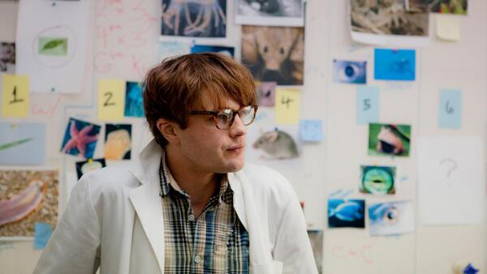
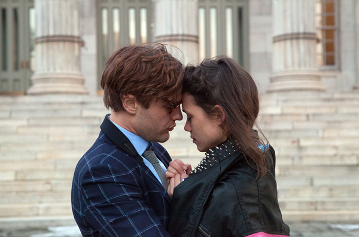
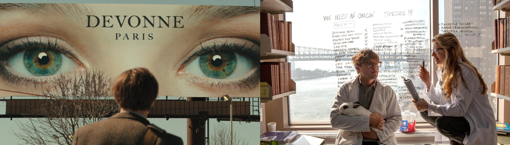

I Origins is a 2014 American science fiction romantic drama film written and directed by Mike Cahill.
The story is about a molecular biologist and his laboratory partner, who uncover evidence that may fundamentally change society as we know it.
A young scientist and his lab partner set out to dis/prove, once and for all, the origins of mankind by studying eyes and the chromosome for sight in various species. Over several years they collect data that they feel ends up proving Evolution is the correct theory, and gain some notoriety. After their son is born and his eyes are mapped, another person's name comes up in the database as the person those eyes belong to. Another doctor calls and hints that their son has some autism markers and needs to be tested, but all they do is show the baby pictures and try to map which picture his eyes are drawn to and what his reactions are.


This confuses the parents and they begin their own investigation. They start by visiting the person whose eyes match their son's, and they find the person died shortly before their son's conception. They also find that the people in that person's life were in the pictures shown by the other doctor to their baby. As they delve further into the mystery, they start to see data that challenges the known fact that everyone's eyes are unique. They stumble onto a match for the father's ex-girlfriend - a young girl born shortly after his girlfriend's death, who is living in India.
He begins a search for the little girl and when he finds her, administers his own test of photographs. The girl's scores are consistent with random choice and he begins to feel foolish that he ever questioned his own previous research. Yet as they leave and head to the elevator, the little girl explodes into hysterics and does not want to enter the elevator. As he realizes the reason for her hysteria, his conclusions are once again challenged as he remembers his ex-girlfriend, the match to this little girl's eyes, died in an elevator accident.
